Although there isn’t an certain first occurrence of the search icon being used, it has existed since the 1980s. The idea of the symbol likely came from the stereotype of detectives such as Sherlock Holmes carrying magnifying glasses with them wherever they go.

In 1994, Apple introduced a full desktop search engine, AppleSearch, for personal computers. In 1997 it was further developed and renamed Sherlock, and later Spotlight which is still used today.
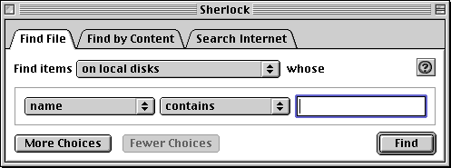It wasn’t until 2003 that Microsoft followed suit and created Windows Desktop Search.

In 1984 (10 years before the release of AppleSearch), Apple Macintosh’s lacked an sort of search function.
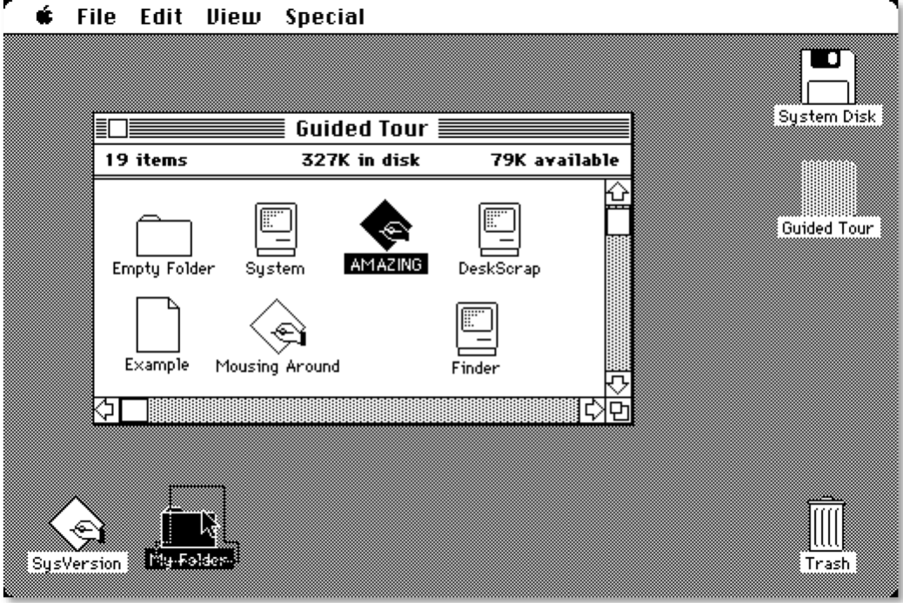Even in 2001, the search bar and icon is not included on the top of the desktop. Instead, the Sherlock application is included in the dock on the bottom of the desktop.
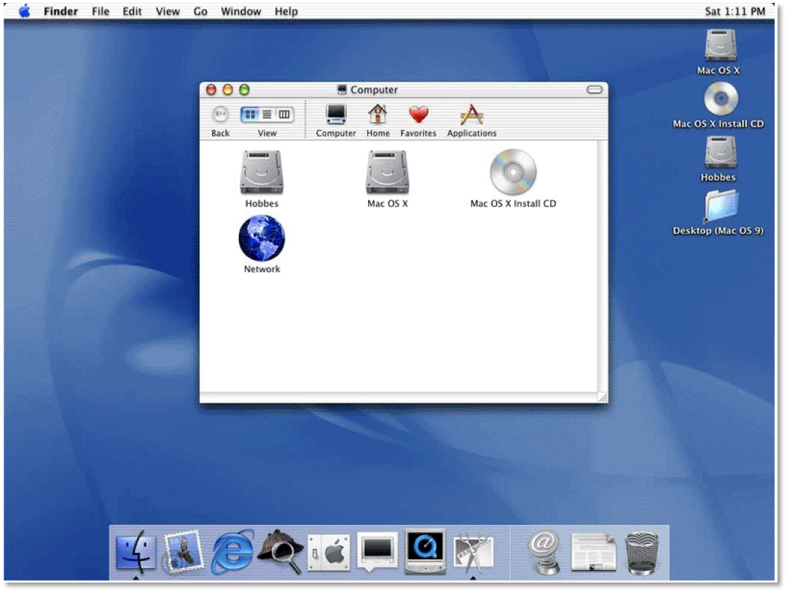In the last decade, search bars have become increasingly ubiquitous with user interfaces and are easily accessible on all home pages, website, etc.
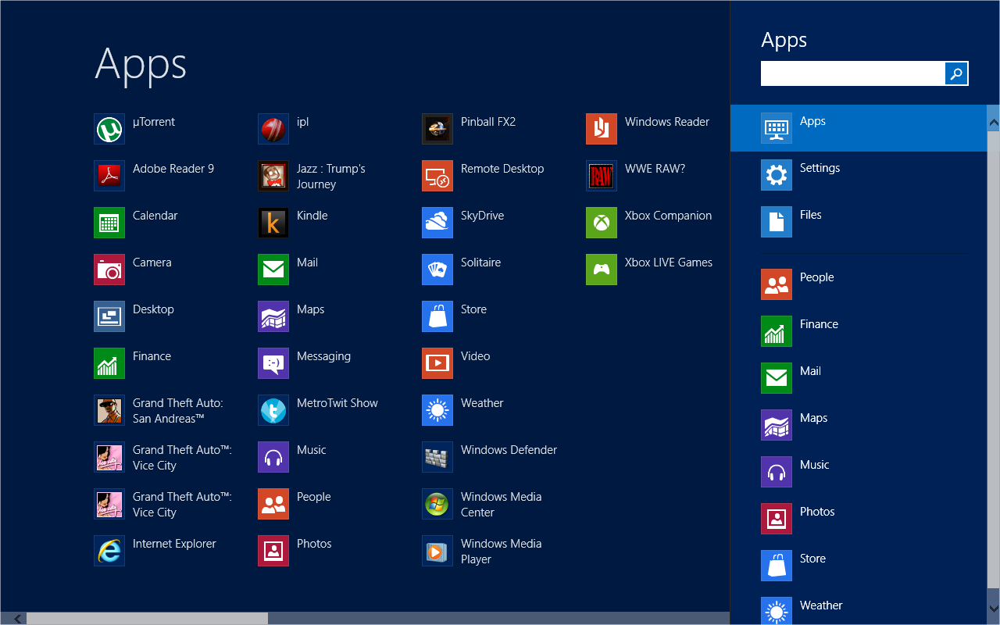Internet searching began long before the Web’s initial launch in 1990.
The first well documented search engine was Archie, a project started by students and volunteers at McGill University School of Computer Science in 1987. Archie launched in September of 1992, four months before the Web’s debut. Note that it also used the magnifying glass in it’s logo.

The web’s first primitive search engine, the W3Catalog, was launched in 1993. However, it’s run was short lived and shut down in 1996.

Throughout the nineties, computer engineers continued to make strides developing algorithms which enhanced web searching.
Around 2000, Google’s search engine rose in popularity. Unlike other search engines of the past, Google’s interface was minimalist and straightforward.


Internet searching began long before the Web’s initial launch in 1990.
Allows users to search for content, both on the web and local systems. Users can search for anything, whether it’s images, websites, music, people, categories, etc.

As mentioned previously, the magnifying glass icon has become ubiquitous with the act searching. Tons of search UI’s include it. More often than not, they're located somewhere at the top of every page. Also note that each search bar includes the word “Search.”
Other sites like Twitter simply indicate searching by only showing the icon
However, once clicked on, the entire upper bar turns into a giant search bar.
Google has centered its entire business around searching, in fact its name is synonymous with the act of searching the web for information. Because of this, it's UI doesn't require the need to include the word "search" in the seachbar.
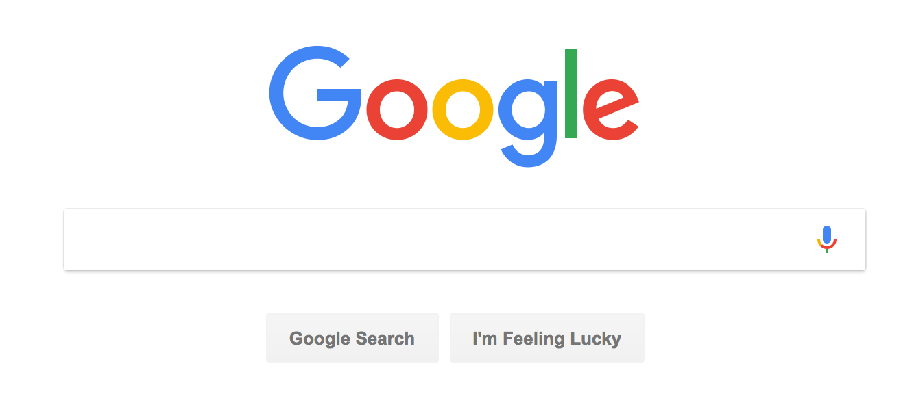Wikipedia's home page is centered around a search bar.
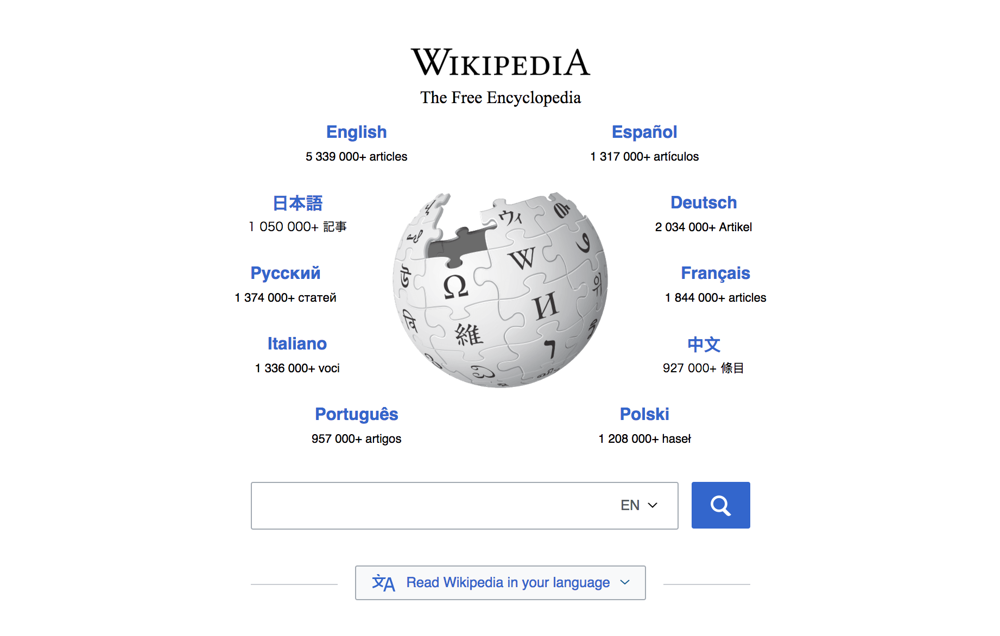Even when you Google a website with some kind of archive, you can conduct a search to narrow your results from that site before even entering it.
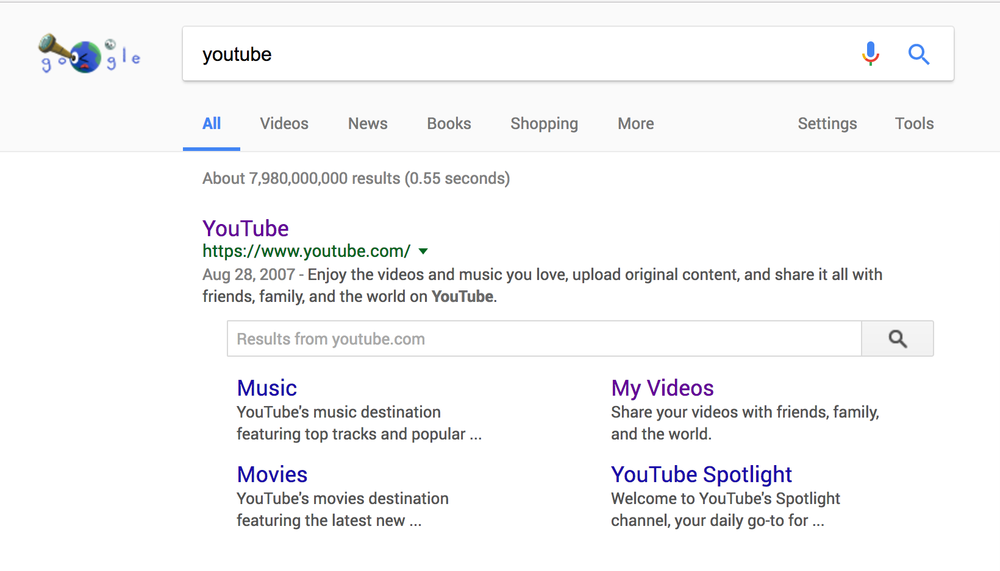The searchbar is extremely accessible now and is a core feature of most apps, websites, and system interfaces.
An Apple Newton (1998) included the search icon at the bottom of it's interface.
Searching is still easily accessible on the IOS interface today.

Apps such as Instagram borrow from the Newton by including the search icon at the bottom of the screen.

Others include it at the top of the screen to mimic their desktop sites.

But not all searches require typing. For example, categories on Eventbrite are provided in a list format.
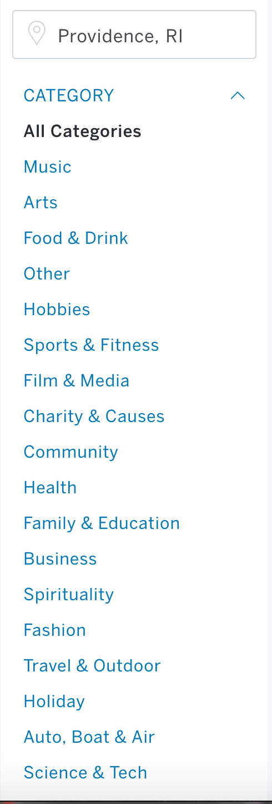Technological advances in voice recognition have freed users from having to type out their searches. Instead, users can use microphones built into their smartphones to search the web. Some of the searches are fairly robust.
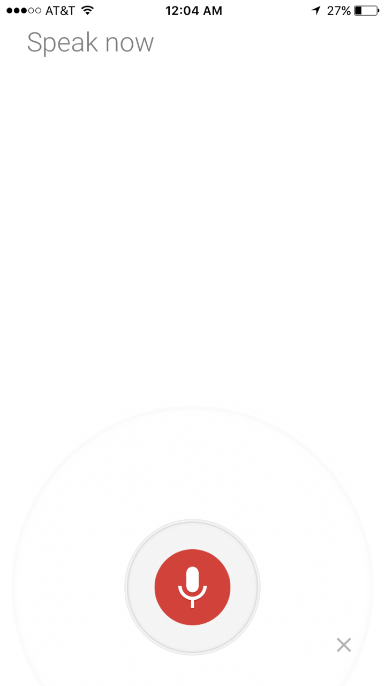Others, like Siri, are designed to feel more conversational.
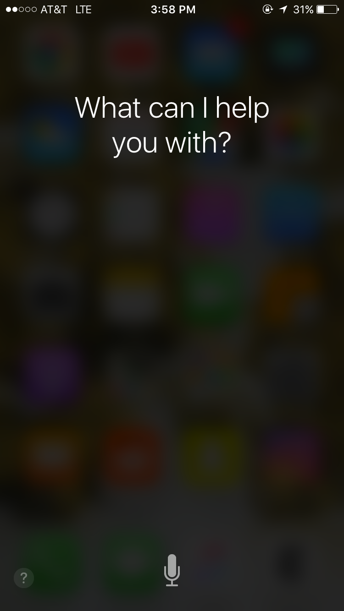As mentioned previously, the magnifying glass icon has become ubiquitous with the act searching. Tons of search UI’s include it. More often than not, they're located somewhere at the top of every page. Also note that each search bar includes the word “Search.”
Searches can be censored. In some instances, this can be helpful. Take, for example, safe search, which filters content so that it is SFW.
An uncensored search of the word “naked.”

A censored search of the word “naked.”

Sites like Pinterest suggest key words. This assists the user in finding information easier, and can be customizable based on former searches.
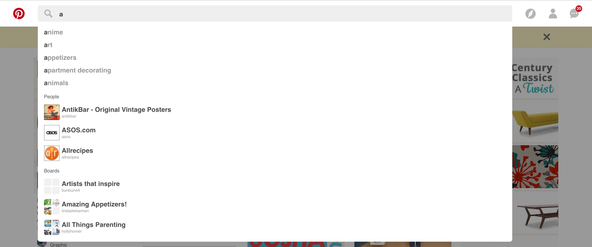Others are determined by what is trending.
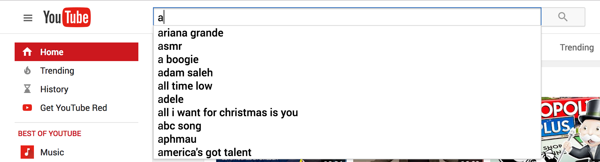Sites filter suggestions by categorizing them.
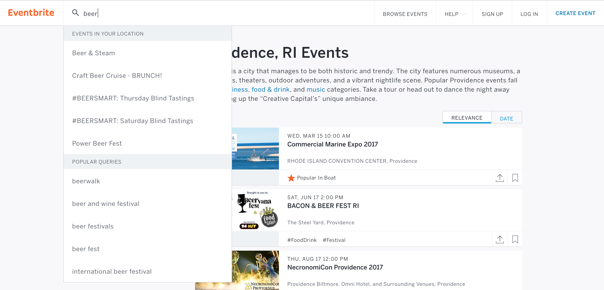When we search for content on search engines such as Google, content is skewed to fit our previous searches. This can cause us to live in echo chambers, and so we are only exposed to information that reaffirms our own beliefs.
Source.This also means that corporations such as Google control what information is filtered into our feeds. Governments can also censor information. For example, take a look at this Google search of Tiananmen Square in the US versus China.